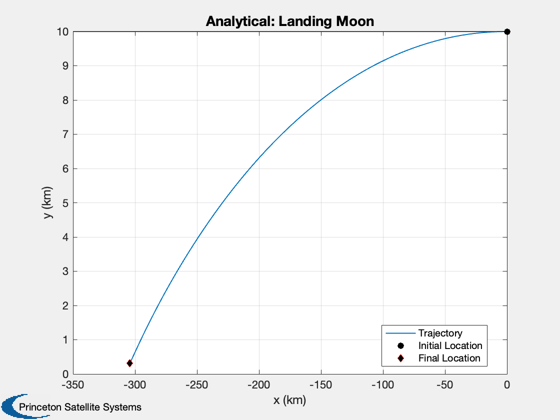
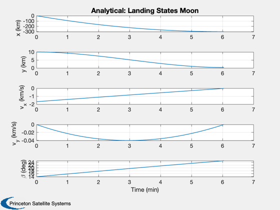
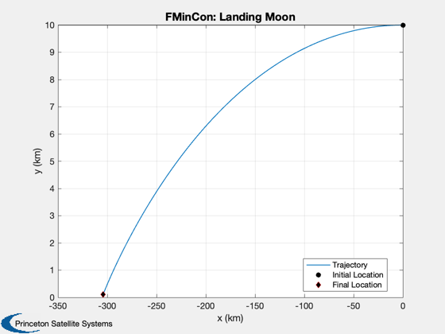

Test fmincon against an analytical solution for the linear tangent law
The test is for a lunar landing in 2D. The surface is assumed flat. The acceleration is constant. Assumes u is along -x.
Requires fmincon from the MATLAB Optimization Toolbox.
See also: Constant, BilinearTangentLaw, Simulate2DLanding, LandingCost2D, LandingConst2D
Contents
%-------------------------------------------------------------------------- % Copyright (c) 2015 Princeton Satellite Systems, Inc. % All rights reserved. %-------------------------------------------------------------------------- % Since 2016.1 %-------------------------------------------------------------------------- if( ~HasOptimizationToolbox ) error('You need the MATLAB optimizaton toolbox to run this script.'); end MU_MOON = Constant('mu moon'); R_MOON = Constant('equatorial radius moon');
Parameters
% Initial state h = 10; % Altitude (km) u = sqrt(MU_MOON/R_MOON); % Orbit velocity % Simulation data d = struct; d.g = MU_MOON/R_MOON^2; % Gravity d.n = 100; % Number of increments d.a = 3*d.g; % Engine acceleration d.x = [0;h;-u;0]; % Initial state d.hFinal = 0.1; % target final altitude printFigures = 0; algorithm = 'interior-point'; % Find the analytical thrust direction angles [beta, t, tMin] = BilinearTangentLaw( u, d.g, d.a, h, d.n ); fprintf(1,'Analytical minimum time %12.4s sec\n',tMin); % We don't want the last beta since the vehicle is on the ground beta = beta(1:end-1); d.n = d.n-1; % Do this to get a landing beta = fliplr(beta); % Simulate the landing with RHSPlanetTakeoff Simulate2DLanding( t, beta, d, 'Analytical' );
Analytical minimum time 3.6651e+02 sec 
Now repeat with fmincon
% fmincon options if( verLessThan('matlab', 'R2014b') ) opts = optimset( 'Display','iter-detailed',... 'TolFun',0.6,... 'TolCon',1e-5,... 'MaxFunEvals',100000); else opts = optimset( 'Display','iter-detailed',... 'TolFun',0.6,... 'algorithm',algorithm,... 'TolCon',1e-5,... 'MaxFunEvals',100000); end % The cost is time, which is a decision variable % The cost is the time to reach the final state vector costFun = @(x) LandingCost2D(x,d); % The numerical integration of the state is in the constraint function constFun = @(x) LandingConst2D(x,d); % The final state vector is [x;0;0;0]; % We don't care what x is since we can always start the descent at the % appropriate time. % First guess for the time decision variable dT = t(2:end) - t(1:end-1); % Do this to get a reasonable first guess but not exact beta = 1.2*beta; % The decision variables are acceleration angle and time increment x0 = [beta';dT']; % Lower and upper bounds lB = zeros(length(x0),1); uB = [(pi/2)*ones(length(dT),1);100*ones(length(dT),1)]; % Find the optimal decision variables. x = fmincon(costFun,x0,[],[],[],[],lB,uB,constFun,opts);
First-order Norm of
Iter F-count f(x) Feasibility optimality step
0 199 3.665056e+02 1.918e+01 2.341e-03
1 398 3.654359e+02 1.236e-01 2.790e-01 7.178e-01
2 597 3.664911e+02 1.657e-04 1.000e-01 1.139e-01
Optimization completed: The relative first-order optimality measure, 1.000221e-01,
is less than options.OptimalityTolerance = 6.000000e-01, and the relative maximum constraint
violation, 8.639314e-06, is less than options.ConstraintTolerance = 1.000000e-05.
Set up the simulation
beta = x(1:d.n)'; dT = x(d.n+1:2*d.n); t = zeros(1,length(dT)); for k = 2:d.n+1 t(k) = t(k-1) + dT(k-1); end % Simulate the landing Simulate2DLanding( t, beta, d, 'FMinCon' ); %-------------------------------------- % $Id: 18f501562d71c4aac58d6962951f0837f1122163 $